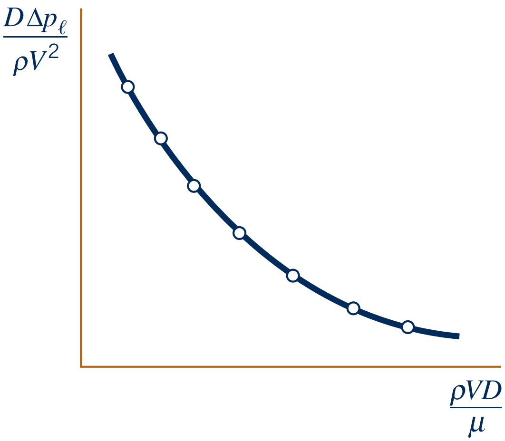

Interpret Reynolds and Froude numbers as force ratios
Understand model–prototype similarity
Recognize when Buckingham Pi is needed
Dimensions
Primary Dimensions (quantity)
Mass (M)
Length (L)
Time (T)
Temperature (Θ)
Secondary Dimensions
Velocity (L/T)
Acceleration (L/T²)
Force (ML/T²)
Energy (ML²/T²)
Pressure: \(ML^{-1}T^{-2}\)
Dynamic viscosity: \(ML^{-1}T^{-1}\)
Specific weight: \(ML^{-2}T^{-2}\)
Secondary dimensions are derived from a combination of primary dimensions
Dimensional Homogeneity
the left side of the equation must have same dimension as the right side, and all additive terms must have the same dimensions
restricted homogeneous equation: equations valid or restricted to a particular systme of units
general homogeneous equation: equations valid across all systems of units
$$v=v_0+at$$
$$LT^{-1}=LT^{-1}+(LT^{-2})(T)$$
Dimensionally homogeneous.
Why Dimensionless Groups?
$$\Delta p_l = f(D, V, \rho, \mu)$$
Instead of changing V, D, and μ independently, we can change the dimensionless groups to evaluate the effect on the dimensionless pressure.
In general using dimensionless groups:
Reduce the number of independent variables
Collapse experimental data
Transfer results between model and prototype
Identify dominant physical effects

Which dimensionless group are the most important for engineering applications?
Reynolds Number
$$Re=\frac{\rho VL}{\mu}=\frac{VL}{\nu}$$
Ratio of inertial effects to viscous effects.
Small \(Re\): viscous effects are comparatively important
Large \(Re\): inertia is comparatively important
Froude Number
$$Fr=\frac{V}{\sqrt{gL}}$$
Ratio associated with inertia relative to gravity effects.
Important in free-surface flows
Used in wave, spillway, ship, and hydraulic-model scaling
Buckingham Pi Theorem
Theorem: If an equation (read problem) involves $k$ variables and is dimensionally
homogeneous, it can be
re-expressed in terms of a set $k - r$ dimensionless numbers $\Pi_1, \Pi_2, ..., \Pi_{k-r}$,
where $r$ is
the minimum number of base dimensions required to describe the variables involved.
Identify number of variables, $k$, involved in the problem:
\( x_1 = f(x_2, x_3, \ldots, x_k) \)
Count number of base dimensions, $r$, involved in the
problem
Determine the number of required non-dimensional groups,
$k-r$ (Buckingham Pi Theorem)
\( \Pi_1 = f(\Pi_2, \Pi_3, \ldots, \Pi_{k-r}) \)
Method of Repeating Variables
Method of Repeating Variables provides a systematic way of constructing the
non-dimensional groups for a problem
Identify number of variables,
$k$, involved in the problem
Count number of base dimensions,
$r$, involved in the
problem
Determine the number of required
non-dimensional groups, $k-r$ (Buckingham Pi Theorem)
Select a number of repeating variables,
where the number of repeating variables equals the number of base dimensions $r$
Construct a non-dimensional group by
multiplying one of the non-repeating variables by the product of the repeating variables, each raised to
an exponent that will make the group dimensionless
Repeat step 5 for each of the remaining
non-repeating variables
Check if the numbers formed are
actually non-dimensional
Re-arrange the numbers to more common
groups (if such exist)
Relax and think about the results
Similitude
A prototype refers to the real
thing
(e.g. full-scale aircraft, building, bridge, etc.)
A model refers to a smaller
(or sometimes larger) representation
of the prototype (e.g. wind tunnel model of an aircraft, hydraulic model of a dam, etc.)
Dimensional analysis gives us the
dimensional number